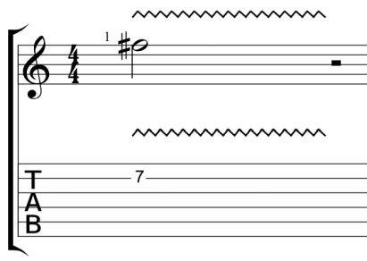

<ion-header>
  <ion-toolbar>
    <ion-title>practice-single-session-element</ion-title>
  </ion-toolbar>
</ion-header>

<ion-content>
  <ion-card class="card-no-shadow">
    <ion-card-header>
      <ion-card-title>
        
        <span style="position: relative; top: -20px; left: 20px; text-decoration: underline">{{sessionInfo["title"]}}</span>
      </ion-card-title>
      <ion-card-subtitle>
        <span *ngIf="sessionInfo['completed']; then progress else subtitle"></span>
        <ng-template #progress>
          <div style="padding: 10px; text-align: center; border: 1px solid black; margin: 0 auto; max-width: 50%">
          {{sessionInfo["completed"].toString()}}/{{sessionInfo["total"].toString()}} completed
          </div>
        </ng-template>
        <ng-template #subtitle>
          <div style="padding: 10px; text-align: center; border: 1px solid black; margin: 0 auto; max-width: 50%">
            {{sessionInfo["subtitle"]}}
          </div>
        </ng-template>
      </ion-card-subtitle>
    </ion-card-header>
  </ion-card>      

  <ion-card>
    <ion-card-title  style="text-align: center">Time remaining: <span id="timeRemaining">5:00</span></ion-card-title>
    <ion-card-content>
      
      <ion-button expand="block" fill="outline" color="danger" style="margin-top: 20px" (click)="cancelSession()">Cancel</ion-button>
    </ion-card-content>
  </ion-card>
</ion-content>
<script type="text/javascript">
  let currentTime = 90; // seconds
  let timeRemaining = document.getElementById("timeRemaining");
  let timer = setInterval(function() {
    currentTime = currentTime - 1;
    let minutes = currentTime / 60;
    let seconds = currentTime % 60;
    if (currentTime === 0) {
      minutes = 0;
      seconds = 0;
      clearInterval(timer);
    }
    timeRemaining.innerHTML = `${minutes}:${seconds}`
  }, 1000);


</script>